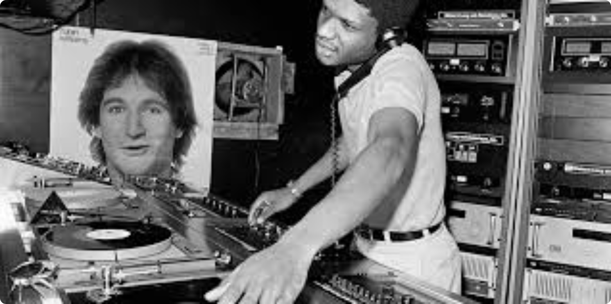
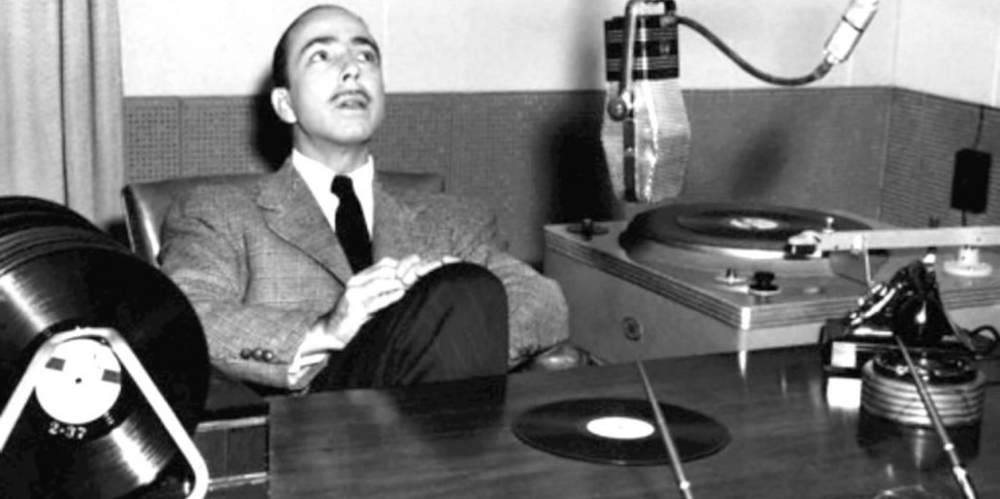
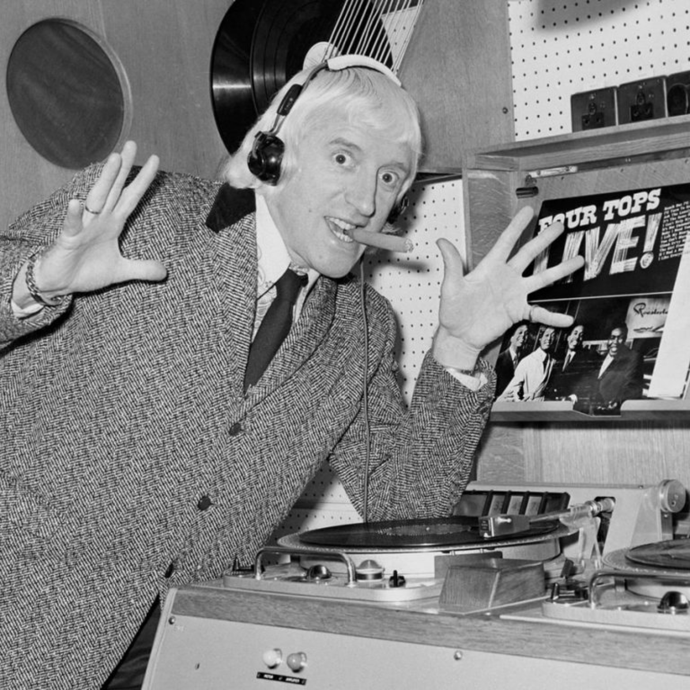
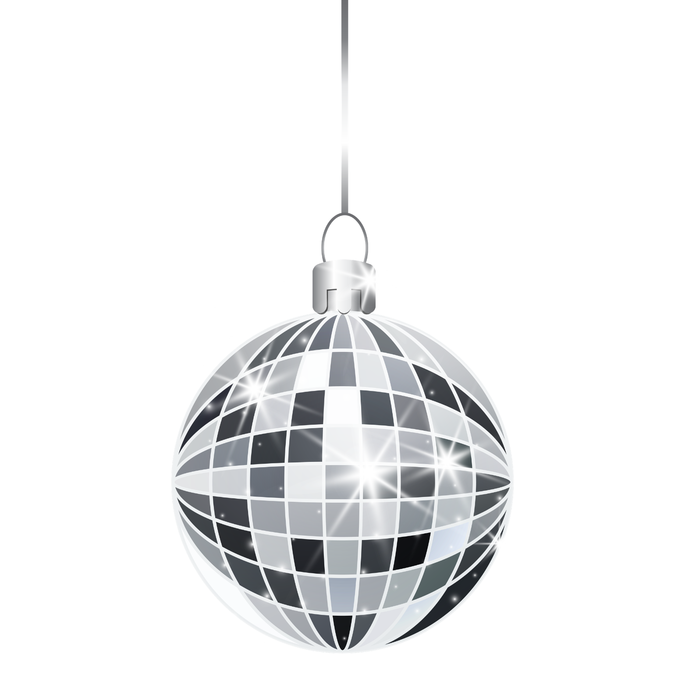
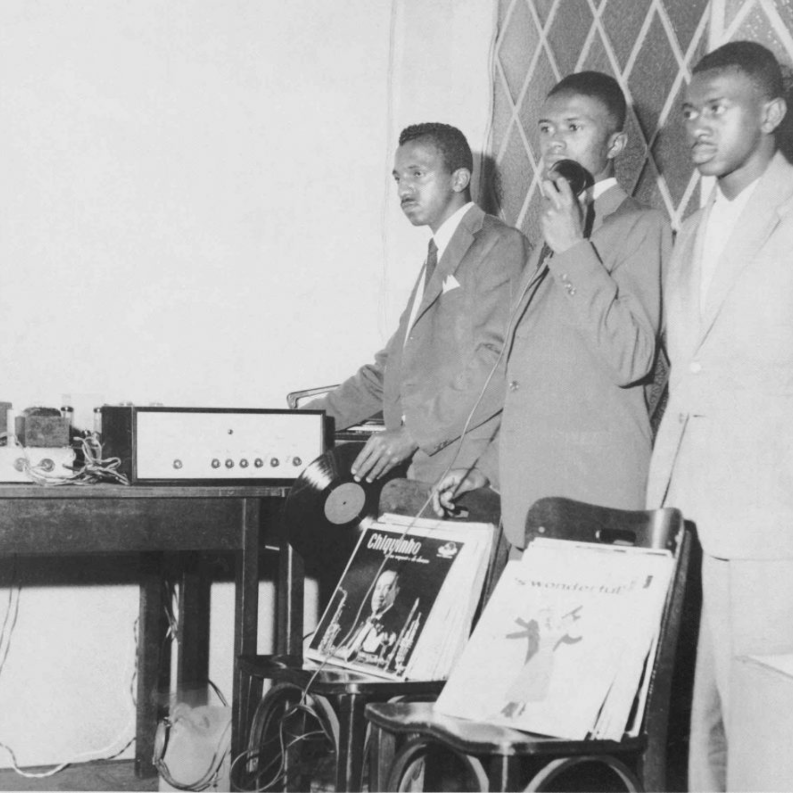
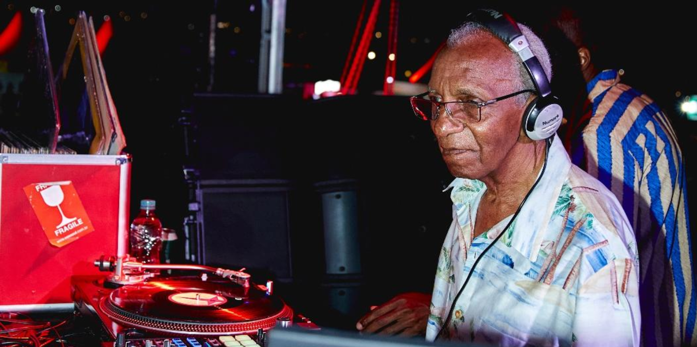

A cultura dos DJs evoluiu de pioneiros dos anos 70, como Kool Herc, para curadores culturais e principais atrações mundiais, moldando festas e a música através de curadoria, técnicas de mixagem e tecnologia.
Em 1939 o termo Disc Jockey surgiu, com o radialista americano Walter Winchell, que descreveu o locutor Mártin Block, que ganhou fama por tocar música popular gravada nas rádios.


Já para a década seguinte, em 1943, o radialista Jimmy Savile se tornou o primeiro DJ de festa da história, tocando discos de jazz em um clube de veteranos ingleses, mais tarde, em 1947, Savile foi o primeiro a utilizar dois toca-discos e microfones para discotecar.

Em 1947, abriu em Paris, a boate Whiskey a Go-Go, sendo considerada a primeira discoteca do mundo.

Em 1958, já tínhamos nosso representante: Osvaldo Pereira, conhecido como primeiro DJ brasileiro, começou visionariamente a discotecar em festas paulistanas.
